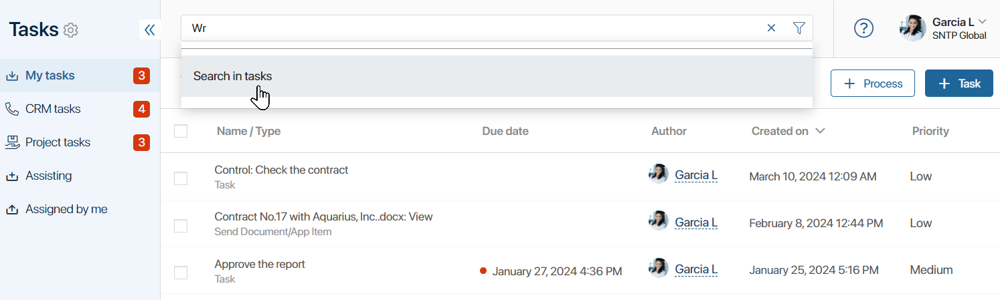
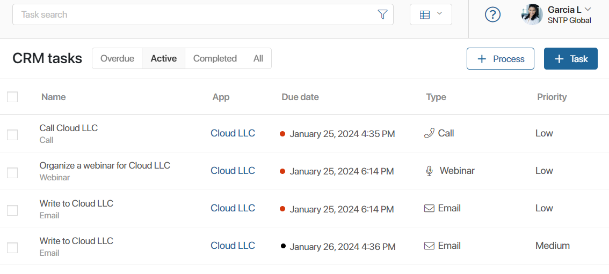
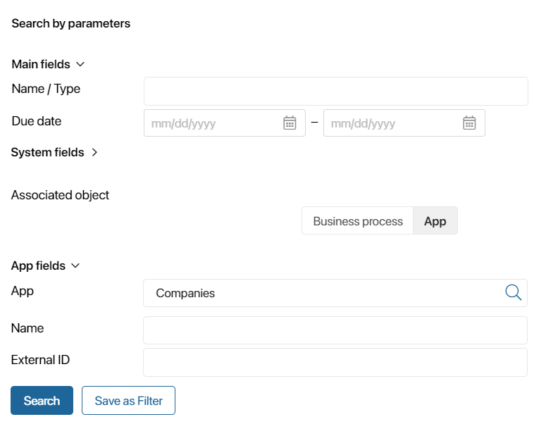
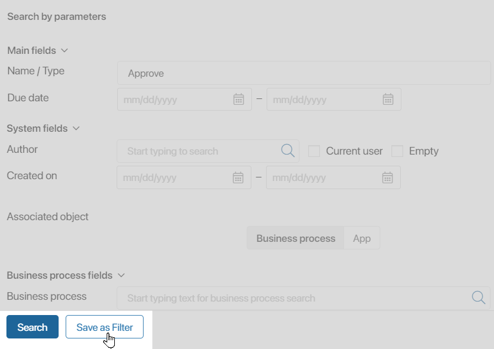
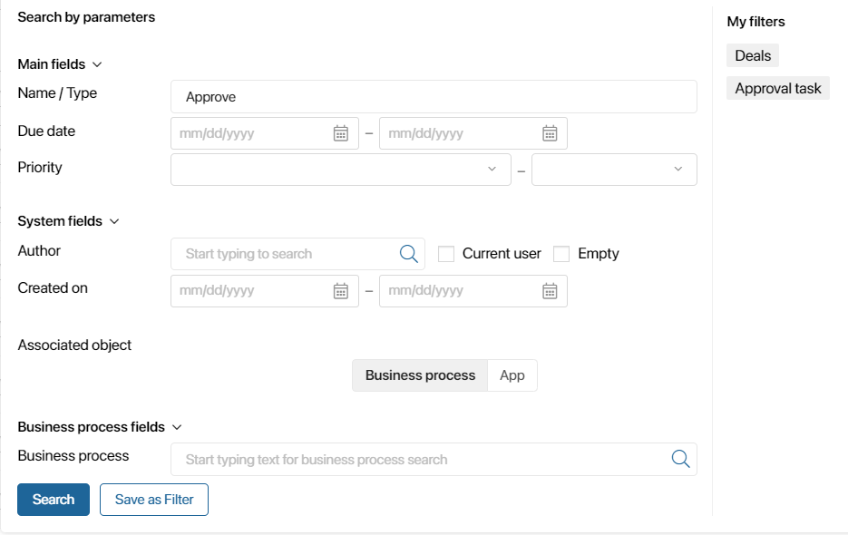
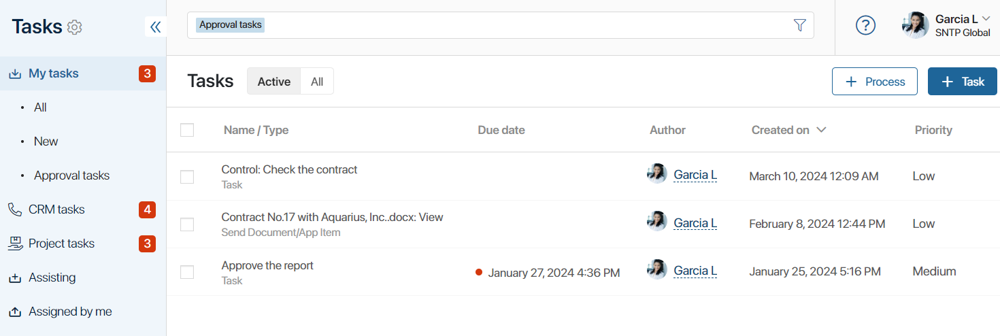
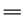
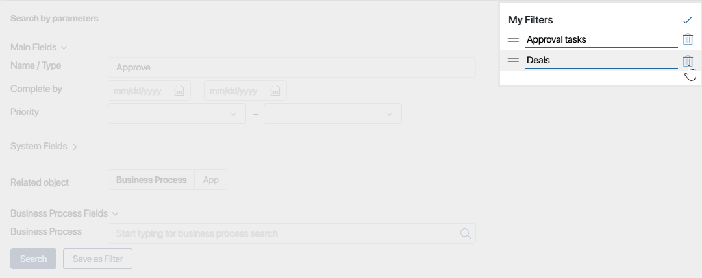

To quickly find necessary information about the task, use the task search function. You can search by subject, author, start and due date as well as corresponding business process or app.
If you are planning to use the same set of search parameters on a regular basis, you can save it as filter.
Search by subject
To find a task, simply type its subject in the search box. The search will be performed through the section you are currently browsing: My tasks, Assigned by me, CRM tasks, Assisting, etc.

In the search results, you will see the task name, the author, and the due date.
You can filter the search results. To do this, switch between the available options: Overdue (unfinished tasks in the CRM tasks group that are past their due date), Active (recent tasks), Completed (completed CRM tasks), and All (current and completed tasks).

Search by parameters
To make search results more accurate, use advanced features. Click the icon to the right of the search box and set the parameters.

You can search by:
- Main fields: name, due date, executor of a CRM task.
- System fields: author, the date the task was created.
- Associated object. It can be a business process that includes the task you are looking for, or an app that the task is associated with. There are several ways to associate a task with an app:
- An item of the app is passed to the process context variable via the Link to field option when the process is started from the app item page or via the Start process activity.
- The process is launched from the page of the associated app.
- The task is created on the page of an app item in the Associated tasks widget.
Enter the name of the associated object manually or select one of the available ones by clicking the magnifying glass icon. You can specify system and custom objects, for a business process you can also select CRM tasks names. You will see the fields of the associated process or app that have the Search and sorting option enabled. Use these fields to limit your search, for example, by specifying an exact date or a certain participant.
Please note that the Associated object option is not available for CRM tasks.
Use filters
Each user can define a set of parameters to search for tasks and save them as a filter to use such a search repeatedly.
Create a filter
Open the Search by parameters window, fill out the fields, and click the Save as Filter button.

In the field that appears, enter the filter name and click Save.
Apply a filter
The added filters will be displayed in the sidebar of the advanced search window.
To apply a filter, click on its name. Search results will include all items that correspond to the filter parameters.

In addition, if you have created filters for the My tasks page, their names will be displayed in the left menu of the workspace. You can quickly sort tasks into groups as you move between pages.

Edit a filter
To delete, rename filters, or change the order in which they are displayed, open the advanced search window and click the pencil icon in the upper right corner.
Enter a new filter name or delete a filter by clicking the recycle bin icon to delete the filter. To move a filter higher or lower in the list, click the  icon and drag the filter.

To exit edit mode, click the icon.
The changes made will be displayed in the advanced search window and in the left menu of the My tasks page workspace for filters.
Found a typo? Select it and press Ctrl+Enter to send us feedback